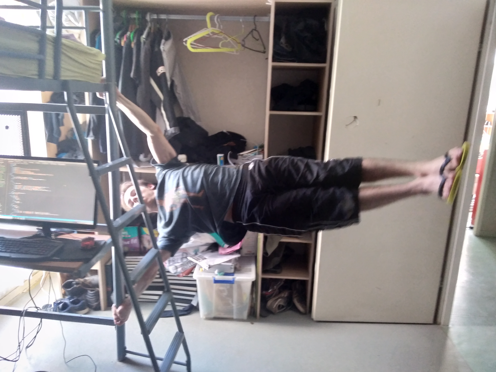

Jeux vidéo
Je suis un grand passionné de jeux vidéo depuis mon plus jeune âge et il m'arrive encore aujourd'hui souvent de jouer à de nombreux jeux vidéo divers et varié.
"Street" workout d'intérieur

je pratiquais ce sport surtout au collège et au lycée car mes camarades le pratiquaient et qu'il y avait du matériel à disposition , mais il m'arrive toujours de temps en temps de faire un drapeau ou un poirier tranquillement chez moi.
Internet
Internet m'est très utile car je dispose de nombreux réseaux sociaux et que je l'utilise pour aller sur des plateformes vidéos , faire des recherches , des jeux ,écouter de la musique etc ... Comme beaucoup j'y passe du temps.